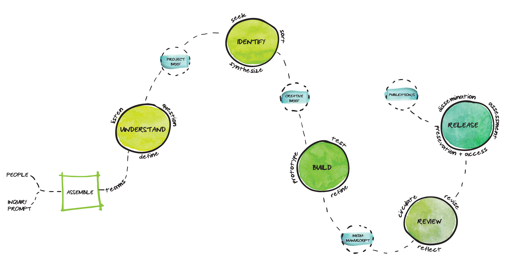

Even as the scholarly communications field pursues the opportunities presented by digital technology, its routine operations remain anchored in print-centric regimens. For those working to evolve scholarly communications in the Internet age, particularly as it bears upon long-form scholarship, there is compelling need to productively disrupt and reconfigure the workflows and work cultures that have naturalized around the production of printed products. It is precisely this complex, systemic issue that Greenhouse Studios | Scholarly Communications Design at the University of Connecticut (UConn) addresses with its design-based, collaboration-first model of scholarly production.
With funding from the Andrew W. Mellon Foundation, the Digital Media & Design Department at UConn, the University Library and UConn Humanities Institute launched Greenhouse Studios in 2017. As a transdisciplinary collective, Greenhouse Studios employs design-thinking methodology to long-form digital scholarship. With its first two cohorts of collaborative projects, the Studios implemented an inquiry-driven approach that addresses the divided workflows and counter-productive labor arrangements that have complicated scholarly communications in the digital age.
While the introduction of digital tools across the “information chain” model of scholarly communications has altered activities from research and writing through to preservation and reading, it has not reconfigured the larger workflow in which the various actors remain interlinked but largely independent save for key transactional, or “handoff,” moments (CNI, 2016). Simply put, the “information chain” of scholarship begins with a knowledge creator, passes through to a publisher and culminates with accessibility secured by libraries and use by readers (Owen, 2002: 275-88) . This transactional model has contributed to the persistence of an increasingly detrimental division of activities into those of the knowledge creation, or “domain,” side and those of the production, or “build,” side (Sosin, 2016).
By disrupting and reconfiguring divided workflows that have naturalized around the production of printed products, Greenhouse Studios brings together project teams on the “domain” side versus the “build” side. Each year, a new theme or problematic frames the work of the project teams, and diverse groups of collaborators are brought together, including designers, developers, editors, faculty and librarians. Starting with a problematic or issue rather than a faculty interest flattens counterproductive hierarchies and bringing in partners early in the process lends itself to the collaboration-first approach of the creation and expression of knowledge. Digital formats for the projects are not presupposed, as the format—digital or analog—that best represents the long-form scholarly work is taken under consideration. The first cohort of Greenhouse Studios teams developed projects in diverse formats including a documentary film, a virtual reality environment and an electronic decision-making novel.
Guiding the work of the teams, the Greenhouse Studios design process model provides a workflow for each project through five major sprints or phases. The design process model was developed through a series of exercises to elicit individual mental models of the scholarly design process from the perspective of a project manager, scholar, designer, repository manager, digital scholarship librarian, developmental editor and MFA student/research assistant. Comparisons of the mental models highlighted similar project phases for each participant, although the points of intersection were often differently identified. In looking at these points of overlap, neutral descriptors for shared activities were adopted, both for mutual intelligibility and to eliminate the kinds of value judgments that domain-specific terms may inscribe.
Figure 1. Greenhouse Studios Design Process Model
Being mindful of the Greenhouse Studios goals for workflow and work culture, the design process model adopts elements from the long tradition of design thinking as applicable across diverse fields. Design thinking as taught, practiced and disseminated by its most well-known and long-standing academic and corporate proponents, Stanford University’s Hasso Plattner Institute of Design (aka the d.school ) and the design firm IDEO, traces its roots to the 1960s’ merger of a Stanford program that joined arts and mechanical engineering (Miller, 2015). Today, it has extended to endeavors as far afield as finance, films, museum exhibition, journalistic communications, education, and critical making in the digital humanities. Across various incarnations, design thinking processes typically involve a series of iterative discovery and development cycles, each characterized by a subset of activities designed to facilitate that cycle’s goal.
Work through the Greenhouse Studios design process model begins with an inquiry or prompt and brings together team members in response to a central problematic. During the catalyst phase of Assemble, team members gather, meet fellow participants and review the guidelines for project teams. The relevant human talents and other resources are defined during the first full sprint, or the Understand phase, which produces a project brief framing the project’s aims and audiences. During the subsequent Identify phase, relevant sources of knowledge and inspiration are researched and synthesized. The resulting creative brief outlines the media formats of the project, as well as the formal peer review and assessment plans for the work. Iterative prototyping and refining of a project takes place during the following Build phase, producing a media manuscript, which could be a website, book manuscript, documentary film, exhibition or other format. During the Review phase, the project is revised, edited and submitted for peer review. The final phase is the Release or launch of the project, as well as the longer-term work of dissemination, assessment and preservation. Adjacent to this phase, there may also be other publications produced by individual project team members.
This design process model guides each of the Greenhouse Studios inquiry-driven, collaboration-first projects. The implementation of the process began before the launch of the first cohort of projects, and the model has undergone subsequent iterations across several development cycles. The team participants and an inquiry prompt act as catalysts for the workflow, which places collaboration at the center of the process, rather than an individual scholar’s research goals. The emphasis on the “collaboration-first” nature of the process allows participants to collectively imagine scholarly projects from the outset and serves as a corrective to divided workflows, even digital-centric ones, where collaborators are only brought on board for the final implementation of projects.